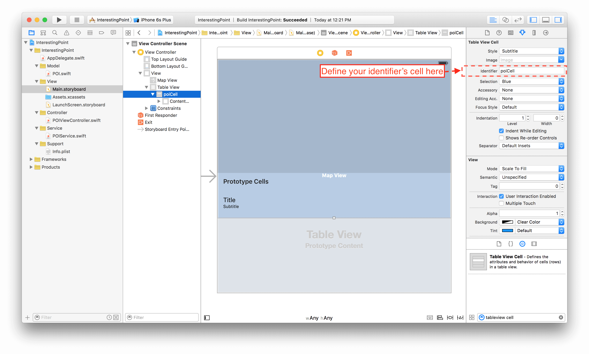
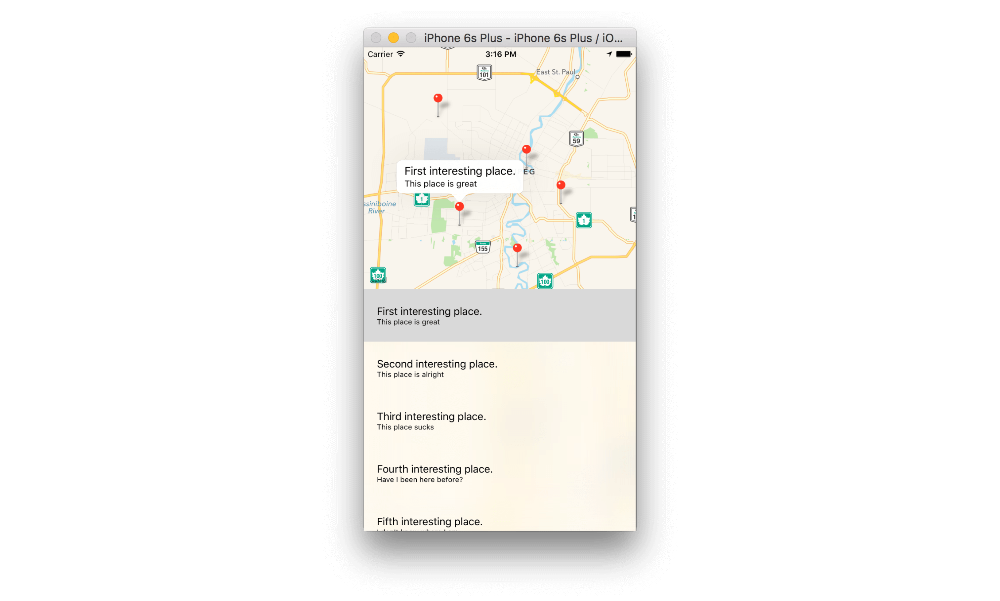

Step 5: Show POIs in TableView
This is the most interesting part: we are going to use the delegation and datasourcing features of iOS in order to feed and control our components.
You said delegation and datasourcing... what's this?
To make it simple, a Class can define a specific protocol with methods which are necessary (or sometimes optional) to control itself (such as feeding the cells of a table view, or opening the keyboard while clicking in my custom field, etc.). Any component can register to a protocol and implement its methods in order to manipulate the one (or more) instance(s) of the Class.
What's more? Well, Apple already defined protocol for useful native Class in its libraries. Sounds great! Let's try it with the Table View component:
Any component can register to a protocol, but usually we will define the current view controller as the delegate and/or datasource for the instance which require it, let's define our POIViewController as a table view datasource and delegate (and this is -again- really simple):
class POIViewController: UIViewController, UITableViewDataSource, UITableViewDelegate {
@IBOutlet weak var mapView: MKMapView!
@IBOutlet weak var tableView: UITableView!
override func viewDidLoad() {
super.viewDidLoad()
// Do any additional setup after loading the view.
...
tableView.datasource = self // <-- Don't forget to register the view controller as the datasource and delegate
tableView.delegate = self // <-- of your table view instance
}
}
That's it, your POIViewController can handle any instance of the Table View Class! But wait.. xCode is now giving me a new error:
Type 'POIViewController' does not conform to protocol 'UITableViewDataSource'
Remember about required or optional protocol's methods to implement? Well UITableViewDataSource define some required methods in its protocol: tableView(tableView: UITableView, numberOfRowsInSection section: Int) and tableView(tableView: UITableView, cellForRowAtIndexPath indexPath: NSIndexPath)
The first one defines the number or row which must be inserted into our table view. In our case this should be equal to the number of POIs in our pois array, add the following to your POIViewController:
func tableView(tableView: UITableView, numberOfRowsInSection section: Int) -> Int {
return poiService.pointsOfInterest.count
}
The second method defines the design of our cells (which is important and we understand why it is a required method of the protocol), in our case we already "draw" a custom cell with a title and subtitle in our storyboard remember? Go back to your storyboard and add an identifier to your custom cell in order to point it in your code:

We can now refer to this custom cell with the identifier "poiCell" in our code:
func tableView(tableView: UITableView, cellForRowAtIndexPath indexPath: NSIndexPath) -> UITableViewCell {
let cell = tableView.dequeueReusableCellWithIdentifier("poiCell", forIndexPath: indexPath)
let poi = poiService.pointsOfInterest[indexPath.row]
cell.textLabel?.text = poi.title
cell.detailTextLabel?.text = poi.subtitle
return cell
}
- We refer to our custom cell in the storyboard
- We bind the value of each element of the pois array to our cell's components
But the table view protocol is much more powerful, Apple's developers defined tons of methods you can implement to customize your table view. We can for example, define the event when a cell of the table view is selected through the tableView(tableView: UITableView, didSelectRowAtIndexPath indexPath: NSIndexPath) delegate method:
func tableView(tableView: UITableView, didSelectRowAtIndexPath indexPath: NSIndexPath)
{
NSLog("The cell at this index \(indexPath.row) has been selected!")
}
This is awesome! We can even combine the protocol's method of the table view delegate and the map view delegate:
import UIKit
import MapKit
class POIViewController: UIViewController, UITableViewDataSource, UITableViewDelegate, MKMapViewDelegate { // <- map view delegation protocol
@IBOutlet weak var mapView: MKMapView!
@IBOutlet weak var tableView: UITableView!
...
// MARK: - Lifecycle
override func viewDidLoad() {
super.viewDidLoad()
// Do any additional setup after loading the view.
mapView.delegate = self // <-- map view delegate
...
}
override func viewDidAppear(animated: Bool) {
super.viewDidAppear(animated)
...
}
// MARK: - UITableViewDataSource
func tableView(tableView: UITableView, numberOfRowsInSection section: Int) -> Int {
return poiService.pointsOfInterest.count
}
func tableView(tableView: UITableView, cellForRowAtIndexPath indexPath: NSIndexPath) -> UITableViewCell {
...
}
// MARK: - UITableViewDelegate
func tableView(tableView: UITableView, didSelectRowAtIndexPath indexPath: NSIndexPath)
{
let poi = poiService.pointsOfInterest[indexPath.row]
mapView.selectAnnotation(poi, animated: true) <-- Our controller can now interact with the map view through the delegate's methods
}
}
And we can even do it in the other way, selecting the corresponding line in our table view while touching one of the POI on the map:
func mapView(mapView: MKMapView, didSelectAnnotationView view: MKAnnotationView) {
// The annotation of the selected POI can be nil by definition, because it's an optional
// So we check if it's value exist through the guard statement
guard let selectedPOI = view.annotation as? POI else {
print("\(__FUNCTION__): Could not get POI from annotationView.")
return
}
// Same here
guard let index = poiService.pointsOfInterest.indexOf(selectedPOI) else {
print("\(__FUNCTION__): Could not get index of selected POI")
return
}
// We select the coressponding cell
let indexPath = NSIndexPath(forRow: index, inSection: 0)
tableView.selectRowAtIndexPath(indexPath, animated: true, scrollPosition: .Top)
}
Build and run.. your application is running like a charm!

You have learnt some basics about the Interface Builder, how to manage the constraints of your components in your view, how to use the delegation and datasourcing protocol of a Class. Check out the Code challenge of this first meetup And don't miss the tips from Jeffrey during the presentation